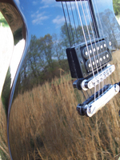

Next Photo
-
Vote
Falls Rain Remains
This photo is all about contrast. The smooth leaves contrast the sharp lines of brick, along with the contrast of the light orange on dark red.
More...
ID: 24
Title: Falls Rain Remains
Description: This photo is all about contrast. The smooth leaves contrast the sharp lines of brick, along with the contrast of the light orange on dark red.
Keywords: leaves brick contrast
Hidden: n
Date added: Fri Mar 17 22:50:37 CST 2006
Date taken: Thu Oct 20 16:01:57 CDT 2005
Camera: FUJIFILM.FinePix S5100 .
Resolution: 1704x2272
Mode:
Shutter speed: 411/100
Flash: 16
Exposure time: 10/170
Iso: 100
Metering: 5
Aperture: 330/100
Focal length: 1540/100
Artist: NathanielGuy Mahieu
Copyright: 2006 NathanielGuy Mahieu
Views: 1859
